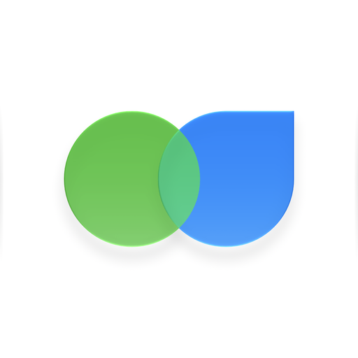

Meals: Nutrition & Calories
Snap your meal, scan a barcode or a nutrition label, and see its calories, macros and a nutrition grade. Your food diary stays on your iPhone.
- Plate photos, barcodes and nutrition labels in one scanner
- Daily targets for calories, carbs, protein, fat and water
- A nutrition grade from A to E for every meal and every day
- Works with Apple Health, with Home Screen and Lock Screen widgets
- No account, no ads, no tracking, no subscription
For iPhone with iOS 26 or later. Plate scanning needs an iPhone 15 Pro or later with iOS 27 and Apple Intelligence.